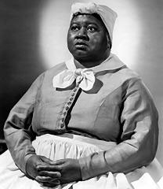
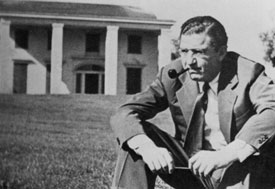

|
Gone With the Wind reigns uncontested as the most
popular American historical film ever made. The single most
influential interpretation of the Civil War in
twentieth-century popular culture, the film has defined that
war for a mass audience. Boldly laying claim to historical
veracity, Gone With the Wind inserts dates and other
historical material before key scenes, using such "history"
to legitimize its Hollywood version of the plantation past.
The filmmakers may have proclaimed their commitment to
authenticity, but their penchant for accurate detail
extended only so far. In the film's opening scenes, blacks
pick cotton despite the fact that plantations never
harvested cotton in spring. (We know it's spring because the
drama opens with news of the April 1861 attack on Fort
Sumter.) In this case, as in many others, producer David O.
Selznick sacrificed accuracy to suit his larger goals.
Gone With the Wind was designed to succeed
simultaneously as a war film (perennially a male favorite)
and as a "woman's picture". In telling the story of Rhett
Butler's heroic role in the Civil War and Scarlett O'Hara's
emotional saga, Selznick combined two winning formulas of
Hollywood's Golden Age. All else is mere backdrop for the
characters' tempestuous struggles.
The film's hyperbolic prologue ("There was a land of
Cavaliers and Cotton fields called the Old South ... Look
for it only in books, for it is no more than a dream
remembered, a Civilization Gone With the Wind") heralds the
quixotic tone of Confederate nostalgia that saturates the
drama. Historian Henry Steele Commager, an early and
enthusiastic reviewer of the novel, commented: "It is one of
the virtues of Miss Mitchell's book that she presents the
myth without being taken in by it or asking us to accept it,
and that she makes clear the reasons for both its vitality
and its ultimate demise." This cannot be said of the motion
picture, however, which indulges in Lost Cause romanticism,
especially in relation to the roles of blacks and whites.
The film's most controversial aspect remains its
portrayal of race relations. Gone With the Wind may
have been the first plantation film to feature
African-American characters who don't spontaneously burst
|

Hattie McDaniel as
the stereotypical character Mammy.
|
into song, but the picture still reflects historian U. B.
Phillips's Plantation school view of the African-American
experience, which portrayed happy-go-lucky "darkies" loyal
to benevolent masters. This view dominated the study of U.S.
history during the first half of this century. Although
Selznick consulted with the NAACP, he nevertheless
concentrated on his white audience, not the black
protesters, and the film reflects his cavalier (in every
sense of the word) attitude. Pork's comic relief, Big Sam's
allegiance, Prissy's imbecility and Mammy's fidelity ring
true to Hollywood's typical betrayal of African Americans.
The film weighs in with stock images: slave children
fanning sleeping belles, a loyal slave being rewarded with
his late master's watch, a grinning black carpetbagger
riding in a fine carriage beside an unscrupulous white man,
and freedmen open-mouthed at the promise of forty acres and
a mule if they "vote like [their] friends do." The movie
never attempts to highlight the racial struggles of the day.
Nor does it make any effort to address the very articulate
and eloquent challenges made by African Americans seeking
their own autonomy.
Gone With the Wind's "all the blacks were
childlike and devoted" subtext by no means refutes the
cinematic sensationalizing exemplified by such earlier films
as D.W. Griffith's The Birth of a Nation and their
caricatures of bestiality in blackface. Nor does it address
contemporary concerns about the treatment of African
Americans. Hattie McDaniel's portrait of Mammy may have won
her a coveted Oscar for 1939 (the first black performer to
win such an honor), but because of Georgia's segregation
laws she didn't attend the film's Atlanta premiere. Decades
later Malcolm X recalled cringing in a Detroit theater when
he first saw the film, and Gone With the Wind
continues to incite anger and discomfort as it subjects new
generations to its racist stereotypes.
Not surprisingly, the film fares better when depicting
the white South. Its glimpses of the O'Hara household
reflect the historical reality of an up-country plantation
in prewar Georgia. Gerald O'Hara's humble foreign origins
mirror the experiences of a large percentage of antebellum
planters, Ireland and Scotland being the main sources of
southern immigrants. Furthermore, in one of the film's early
scenes, ne'er-do-well overseer Jonas Wilkerson reports to
Ellen O'Hara on his daily planting, demonstrating the
plantation mistress's authority on the estate--a fact rarely
reflected in historiography, although frequently underscored
in historical fiction.
Ellen O'Hara's brief appearances demonstrate the
mistress's competent and crucial role in managing her
husband's property--as well as caring for the infirm,
delegating responsibility, ministering to neighbors and
enforcing moral standards both by example and by dictum.
Mrs. O'Hara is the very soul and engine for not only her
family but also her husband's slaves and employees. Her
character conveys the tone and spirit of idealized
plantation life. In fact, the job of mistress of the house
was so rigorous and demanding that many women checked out of
the process altogether, opting instead for a life that
involved lots of smelling salts and reclining on fainting
couches. As hundreds of diaries and letters from the era
testify, Scarlett's dilemma at her mother's death, her
father's breakdown, the O'Hara family's decline and the
general hardships faced during wartime are all true to life.
Scheming southern women have long been a popular focus of
fiction (Lillian Hellman's The Little Foxes, for
example). Thus Scarlett O'Hara's famed conniving and fierce
independence are often seen as just another instance of
literary fantasy. However, Scarlett's transformation in the
face of calamity from southern belle to towering matriarch
was not unusual during Reconstruction. Like most women of
her time, Scarlett found herself forced by economic
necessity into a male domain, and she used whatever feminine
wiles she could, playing a scheming vamp one moment and a
vulnerable damsel in distress the next.
Scarlett's desire to protect her home, Tara, and her
family (indeed, even to commit murder); her mercenary
marriage and scalawag business deals; her exploitation of
convict labor; and her flaunting of gender conventions
|

Producer David O. Selnick
in front of the Tara set.
|
create a heroine both unforgettable and quite faithful to
the historical record. After the war, poverty forced many
women into unfamiliar or unsuitable jobs and marriages. At
the outset of the war, Sen. James Henry Hammond of South
Carolina (famous for telling his fellow senators, "Cotton is
king") declared that the South would triumph. Because
Hammond died during the war, he never had to endure any of
the postwar hardships; his family was not so lucky.
Hammond's granddaughter, Katherine, was forced to train as a
nurse in order to support herself during the deprivation
that accompanied Reconstruction.
Rhett Butler's character is even more accurately
grounded. At the outset, he recognizes, as did many southern
moderates, that "the Yankees are better equipped than we.
They've got factories, shipyards, coal mines, and a fleet to
bottle up our harbors and starve us to death." However, once
Butler witnesses the heartbreak of impending defeat ("Take a
good look, my dear. It's a historic moment. You can tell
your grandchildren how you watched the Old South
disappear"), the former cynic heroically treks off to enlist
in a noble nod to southern honor. Butler's conversion
experience--to sacrifice for a higher cause--symbolized that
of thousands of volunteers whose tramping off to war
redefined mid-century America. Butler's soul is the soul of
every soldier. Scarlett's more complex trials and
tribulations touched a similar chord with the public. Thus,
despite flawed historical interpretation, the movie still
flourishes and entertains. Its Technicolor historical
pageantry is every bit as seductive now as when the film
premiered in 1939.
Source: Catherine Clinton in Past Imperfect:
History According to the Movies (New York: Henry Holt & Co., 1996), 132-36.
|